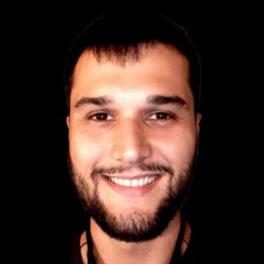

FSU SC Artificial Intelligence Seminar in Tallahassee
Explore AI and Machine Learning at Florida State University
We are a group of people located in and around Tallahassee, all sharing an interest in artificial intelligence (AI) and machine learning. Our primary objective is the exchange of knowledge and ideas. The seminar is hosted by the Department of Scientific Computing at the Florida State University (thus FSU SC). If you are interested in getting to know us and possibly joining, we convene every Friday at 12:00 pm ET at SC-499 - you can also join via zoom. To become a part of our mailing list, please email Nathan Crock. We are a diverse crowd, so presenting takes some thought. Our approach is best expressed by the NASA Trichotomy of Presenting, illustrated by Nathan:
Schedule for Fall 2024
We will meet Friday 30 Aug at noon to finalise the topics for Fall 2024.
Fridays, 12:00 p.m. ET, SC-499.
Attend via Zoom: Zoom Link.
Proposed topics to discuss:
- Phylogeny
- Multimodal
- Inductive Biases
- Embeddings
- State Models
- AI + data assimilation
- Sandy (All Sandy)
- Post transformer architecture
- Tutorials (classroom machines)
- Minimum working examples
- Education + ML
- Deep Fake
- Disinformation
- Optimization
- Training methods
- Spiking NN
- Automation of language evaluation
- State of open LLM.
- Language Frameworks
- Agents: Deep Dive
- Robotics
- Copyright (Law school)
- Quantum Computing ML
- Emotion
- Compression Techniques
- Health + ML
- inpainting
- Biases?
- Advanced RAG Retrievalo Augmented Generation
- Follow up Scientific Machine Learning
- Intro AGI
Current members and their AI interests
 |
 |
 |
 |
| Nathan Crock | Nick Dexter | Gordon Erlebacher | Tom Juzek |
| @FSU - Interdisciplinary Data Science - LLMs - Retrieval Augmented Generation - Computational Reading Models |
@FSU Scientific Computing - Neural Operators - Interpretability - Explainable AI |
@FSU - Neuronal Populations - Evolving Topologies - LLMs |
@FSU - Morpho-syntax - NLP - LLMs |
|  |  |
||
| Jose Miranda | Olmo Zavala Romero | ||
| @FSU - ML appl. in Oceanography - Machine Vision - LLMs |
@FSU SC - Scientific Machine Learning - Oceanography - Medical Imaging |
Send your details to Tom if you want to be added to the table.